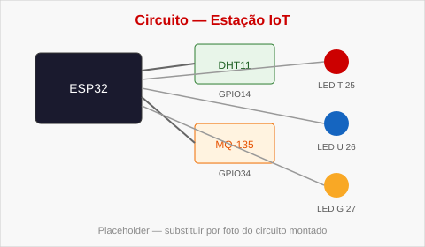
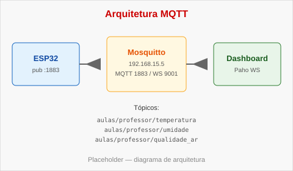
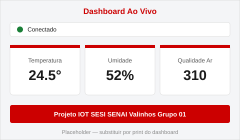

Sobre o Projeto
Esta estação IoT coleta temperatura, umidade e qualidade do ar com ESP32, DHT11 e MQ-135, e publica os dados via MQTT (Mosquitto) para visualização em tempo real neste painel web.
Nome do Grupo: Estação IoT 2TDS2
Turma: 2TDS2 · Matéria: ITCOI
Esta estação IoT coleta temperatura, umidade e qualidade do ar com ESP32, DHT11 e MQ-135, e publica os dados via MQTT (Mosquitto) para visualização em tempo real neste painel web.
Microcontrolador ESP32, sensor DHT11 (GPIO14), sensor de gás MQ-135 (GPIO34) e três LEDs de alerta (GPIO25 temperatura, GPIO26 umidade, GPIO27 gás).

O firmware publica nos tópicos aulas/professor/temperatura,
aulas/professor/umidade e aulas/professor/qualidade_ar.
O navegador conecta ao broker via WebSocket (porta 9001) com a biblioteca Paho.

A aba Dashboard Ao Vivo exibe status de conexão, cartões com os valores recebidos e campo para salvar a senha do professor no localStorage.

Chave: senhaGrupo. Placeholder: ITCOI-2TDS2-FELIPE
(substituir pela senha informada pelo professor, se diferente).
-- °C
aulas/professor/temperatura
-- %
aulas/professor/umidade
-- ADC
aulas/professor/qualidade_ar